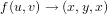

vtkParametricEnneper
Section: Visualization Toolkit Common Classes
Usage
vtkParametricEnneper generates Enneper's surface.
Enneper's surface is a a self-intersecting minimal surface
posessing constant negative Gaussian curvature
For further information about this surface, please consult the
technical description "Parametric surfaces" in http://www.vtk.org/documents.php
in the "VTK Technical Documents" section in the VTk.org web pages.
.SECTION Thanks
Andrew Maclean a.maclean@cas.edu.au for
creating and contributing the class.
To create an instance of class vtkParametricEnneper, simply
invoke its constructor as follows
obj = vtkParametricEnneper
Methods
The class vtkParametricEnneper has several methods that can be used.
They are listed below.
Note that the documentation is translated automatically from the VTK sources,
and may not be completely intelligible. When in doubt, consult the VTK website.
In the methods listed below, obj is an instance of the vtkParametricEnneper class.
-
string = obj.GetClassName ()
-
int = obj.IsA (string name)
-
vtkParametricEnneper = obj.NewInstance ()
-
vtkParametricEnneper = obj.SafeDownCast (vtkObject o)
-

- 
-
double = obj.EvaluateScalar (double uvw[3], double Pt[3], double Duvw[9]) - Calculate a user defined scalar using one or all of uvw, Pt, Duvw.
uv are the parameters with Pt being the the cartesian point,
Duvw are the derivatives of this point with respect to u, v and w.
Pt, Duvw are obtained from Evaluate().
This function is only called if the ScalarMode has the value
vtkParametricFunctionSource::SCALAR_FUNCTION_DEFINED
If the user does not need to calculate a scalar, then the
instantiated function should return zero.